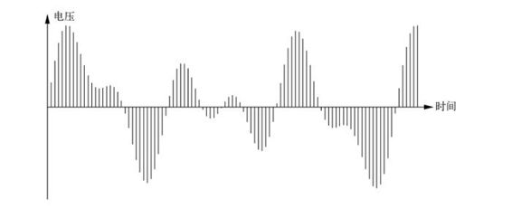
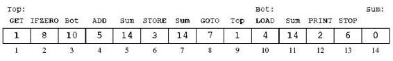

D is for Digital
Table of Contents
1 开篇语
不同的计算机在「能计算什么」上的能力是一样的，差别只在于计算速度有多快，能存储的数据有多少。
Computers are all equally capable in what they can compute, differing only in how fast they operate and how much data they can store.
对于我们在网上所作所为和往来踪迹的记录看起来会永存不灭。数字存储已经如此廉价，而数据的价值却非常宝贵，于是很少有人会丢弃数据。
The records of what we do and where we do it are also likely to live forever. Digital storage is so cheap and the value of data is high enough that information is rarely discarded.
2 第一章：计算机里有什么
与当今的计算机最沾边的前辈是雅卡尔织布机，由法国的约瑟夫•玛丽•雅卡尔大约在 1800 年发明。雅卡尔织布机用长方形卡片上打穿的多行孔洞来标记织布的花样。这样，我们就可以在穿孔卡片上编入各种指令来给雅卡尔织布机「编程」，控制它织出各种不同花样的布来。
The most relevant precursor to today’s computers is the Jacquard loom, which was invented in France by Joseph Marie Jacquard around 1800. The Jacquard loom used rectangular cards with multiple rows of holes that specified weaving patterns. The Jacquard loom thus could be “programmed” to weave a wide variety of different patterns under the control of instructions that were provided on punched cards; changing the cards changed the pattern.
爱达•勒芙蕾丝通常被认为是世界上第一位程序员，编程语言 Ada 也是以她的名字而命名的。
Ada Lovelace is often called the world’s first programmer, and the Ada programming language is named in her honor.
内存之所以被称为「随机访问」，是因为 CPU 能以同样的速度快速访问其中任何地方的信息。以任何顺序随机访问不同位置时，速度不会受到任何影响。
RAM is called “random access” because the CPU can access the information stored at any place within it as quickly as in any other; there’s no speed penalty for accessing memory locations in any random order.
摩尔定律已经持续了 50 年，于是当今集成电路里的晶体管数量早已超过了 1965 年那时候的 100 万倍。
Moore’s Law has been going on for fifty years, so integrated circuits now hav e well over a million times as many transistors as they did in 1965.
用来描述电路规模的基本数值是集成电路里的特征尺寸（即其中的最小尺寸），比如导线的宽度。在过去的很多年里，这个数值在稳步缩减，如今的很多集成电路，特征尺寸是 32 纳米，下一步将会是 22 纳米。
The basic number that characterizes the scale of circuitry is the size of individual features on an IC, for example, the width of a wire. This number has been shrinking steadily for many years. For many circuits today, that minimum feature size is 32 nanometers, and the next step will be 22 nanometers.
3 第二章：比特、字节与信息表示
外部世界的数据——声音、图片、运动、温度，等等一切，在输入端都会尽可能早地转换为数字形式，而在输出端则会尽可能晚地转换回模拟形式。
Data from the external world—sound, images, movement, temperature, and everything else—is converted as soon as possible to a digital form on the input side, and is converted back to analog form as late as possible on the output side.
数字化的数据容易处理，无论最初来源是什么，数字化数据都可以用多种方式来存储、传输和处理，但模拟信息则不行。通过删除冗余和不重要的信息，还可以压缩数字化信息。为了安全和隐私可以对它进行加密，可以将它与其他数据合并，可以复制它而不出错，可以通过互联网把它发送到任何地方，可以将它保存到几乎无限种设备中。而对于模拟信息，上述很多做法是根本行不通的。
Digital data is easy to work with. It can be stored, transported, and processed in many ways regardless of its original source, which is not true for analog information. Digital information can be compressed by squeezing out redundant or unimportant information. It can be encrypted for security and privacy, it can be merged with other data, it can be copied without error, it can be shipped anywhere via the Internet, and it can be stored in an endless variety of devices. Most of this is simply not possible with analog information.

模数转换：以固定时间间隔连续测量（模拟）曲线的高度，测量得到的数值连接起来与曲线近似，测量越频繁，越准确，结果也就越吻合。测量得到的数值序列是波形的数字化表示。
Analog to digital conversion: measure the height of the curve at regular intervals. The measurements provide a sequence of numeric values that approximate the curve; the more often and the more precisely we measure, the more accurate the approximation will be. The resulting sequence of numbers is a digital representation of the waveform.
bit 是合并 binary digit（二进制数字）之后造出来的，造这个词的人是统计学家约翰•图基，时间是 1940 年代中期。
The word bit is a contraction of binary digit that was coined by the statistician John Tukey in the mid 1940s.
kilo 或 1K 可能是指 1000，但也可能指 2^10 即 1024。一般来说，这种混淆导致的误差并不大。
“kilo” or “1K”might mean one thousand, or it might mean 2^10 or 1,024. This is usually a minor difference.
硬盘驱动器制造商美国希捷公司，就曾因为这种差异在加州卷入一场集体诉讼。「原告称希捷公司对存储容量的术语 gigabyte（或 GB），使用的是十进制定义，即 1GB = 10^9 字节，这是在误导消费者，因为计算机操作系统报告硬盘容量时，使用的是 GB 的二进制定义，即 1GB = 2^30（1 073 741 824）字节，相差大约 7%。」
Seagate, a disk drive manufacturer, was involved in a California class action lawsuit based on this distinction. “Plaintiff claims that Seagate’s use of the decimal definition of the storage capacity term ‘gigabyte’ (or GB), whereby 1 GB = 10^9 bytes, misleads consumers because computer operating systems report hard drive capacity using a binary definition of GB, whereby 1 GB = 2^30 (1,073,741,824) bytes, a difference of approximately seven percent.”
一组比特的含义取决于它们的上下文。
The meaning of a group of bits depends on their context.
一个程序的指令就是另一个程序的数据。从网上下载一个新程序，或者从 CD-ROM 或 DVD 中安装该程序时，它就是数据，所有比特将无一例外地被复制一遍。但在运行这个程序时，它的比特会被当成指令，CPU 在处理这些比特时，又会把它们当成数据。
One program’s instructions are another program’s data. When you download a new program from the net or install it from a CD-ROM or DVD, it’s just data, bits to be copied blindly. But when you run the program, its bits are treated as instructions and data as they are processed by the CPU.
4 第三章：深入了解 CPU
（模拟计算机）有用来存储指令和数据的 RAM，还有一块额外的存储区叫累加器，其容量足以存储一个数值。累加器类似于计算器的显示屏，保存用户最近输入的数值，或者最近计算的结果。
指令表
GET |
从键盘获取数值并放到累加器中 |
|---|---|
PRINT |
打印累加器中的内容 |
STORE <M> |
把累加器中内容的副本保存到位置 M |
| （累加器的内容不变） | |
LOAD <Val> |
把 Val 加载到累加器， Val 是一个值或值在存储器中的位置 |
（ Val 不变） |
|
ADD <Val> |
把 Val 与累加器中的内容相加（ Val 不变） |
STOP |
停止运行 |
GOTO <Pos> |
从指定位置读取下一条指令 |
IFZERO <Pos> |
如果累加器的值为零，从指定位置读取下一条指令 |
（程序）运行时，CPU 从 RAM 的第一个位置开始，重复如下简单的循环：
- 读取：从 RAM 中取得下一条指令；
- 译码：搞明白该指令要做什么；
- 执行：执行指令；
- 返回「读取」；
真正的处理器也执行同样的「取指令－译码－执行」循环，只不过为了加快处理速度，还会配备精心设计的各种机制，但核心只有循环。
（模拟计算机）可以执行任何计算，这些指令足以应对数字计算机能够完成的任何计算——任何计算都可以分解为能使用基本指令完成的小步骤。
程序一
GET PRINT STOP
程序二
GET STORE Mem GET ADD Mem PRINT STOP Mem - # RAM 中的一个位置，保存用户输入的第一个数值
把数据放到程序末尾，所有指令后面，CPU 就不会把它解释成指令了，因为
STOP指令会让 CPU 停下来，不会继续读取下一个位置。还需要一种引用该位置的方法，通行的做法是给该数据项起个名字，让一个程序负责跟踪记录该数据项在 RAM 中的实际位置，然后用实际的位置代替名字。
程序三
Top GET
IFZERO Bot
ADD Sum
STORE Sum
GOTO Top
Bot LOAD Sum
PRINT
STOP
Sum 0 # 保存累计和的存储器位置（程序启动时的初始值为 0）
每条指令都需要一个存储器的位置存储其数值代码，而在该指令引用存储器位置或有一个数据值的情况下，还需要另一个紧随其后的位置。也就是说，
IFZERO和ADD等指令因为引用了存储器位置，所以要占用两个存储器单元，其中第二个单元中保存的是它引用的位置。
程序（三）刚开始运行的时候，RAM 中的内容 
真正计算机的指令比我们玩具计算机的多，但性质相同。比如，有更多移动数据的指令，更多完成算术运算及操作不同大小和类型数值的指令，更多比较和分支指令，以及控制计算机其他组件的指令。
典型的 CPU 有几十到数百个不同的指令；指令和数据通常要占用多个内存位置，通常为 2 至 8 个字节。真正的处理器有多个累加器，通常是 16 或 32 个，所以可以保存多个中间结果，而且都是速度极快的存储器。
计算机体系结构研究的一个问题是指令集，也就是处理器配备的指令表。是设计较多的指令去处理各式各样的计算，还是设计较少的指令以简化制造并提升速度？
处理器非常快，通常执行一条指令只需要零点几纳秒。相对而言，RAM 则慢得让人难以忍受——从存储器中取得数据或指令大概要花 25 到 50 纳秒。
现代计算机会在 CPU 和 RAM 之间使用少量的高速存储器来保存最近使用过的指令和数据，这种高速存储器叫作缓存。如果可以从缓存中找到信息，那么就会比等待 RAM 返回数据快得多。
典型的CPU有两到三个缓存，容量依次增大，但速度递减，一般称为一级缓存、二级缓存和三级缓存。
可以把 CPU 设计为交替地取得和执行指令，而同一时刻会有几个指令处于执行过程的不同阶段，这种设计叫做流水线。虽然某个特定的指令仍旧要花同样的时间完成，但其他指令都有机会得到处理，从整体上看完成这些指令则会快很多。
另一种方法是并行执行多条互不干扰、互不依赖的指令，就相当于多条平行的汽车装配线。有时候，只要指令的操作不会相互影响，甚至可以不按顺序执行。
虽然英特尔是台式机和笔记本处理器的主要供应商，但几乎所有的手机都使用 ARM 处理器，因为它耗电更少。
比较不同CPU的速度并不是特别有意义。即便是最基本的算术运算，其处理方式也可以完全不同，很难直接比较。
分布式计算指的是很多更加独立的计算机（比如不共享内存），而且地理上更加分散。大规模的 Web 服务，比如搜索引擎、在线商店和社交网络，都是分布式计算系统。
不管物理结构的变化让人多么眼花缭乱，（计算机）的一般体系结构从 1940 年代至今并没有太大的变化。
这些计算机都具有相同的逻辑功能，可以完成一模一样的计算。从能够计算什么的角度讲，所有计算机都是等价的，尽管运行速度明显不可能等价。
1930 年代，这个结果就已经被几个人分别独立地证明过，其中包括英国数学家艾伦·图灵。他描述了一个非常简单的计算机，展示了它能够计算任何可以计算的任务。他描述的这种计算机，我们今天叫做图灵机。然后，他展示了如何创建一种图灵机，模拟其他图灵机，这种图灵机现在被称为通用图灵机。
CAPTCHA = Completely Automated Public Turing test to tell Computers and Humans Apart（用以区分计算机和人的完全自动化的公共图灵测试）